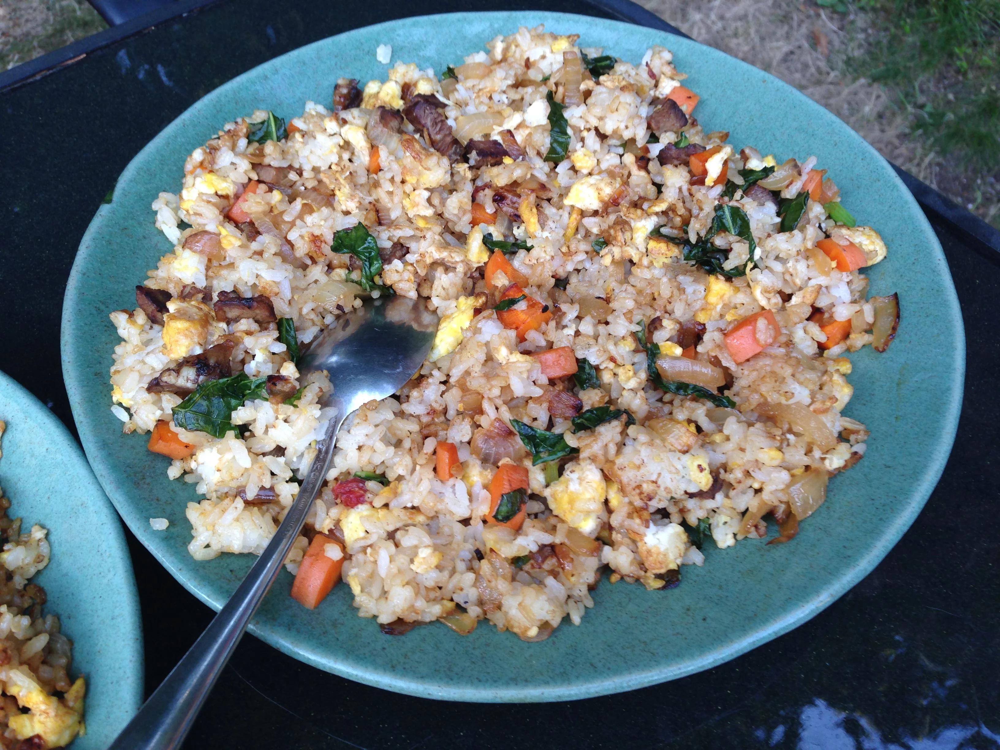

This Thai fried rice is called American fried rice (Khao Pad American) in Thailand, because it uses ingredients that are considered American like ketchup and bacon. It is very popular in Thailand and easy to make. all ingredients should be prepped in advance cause once you start frying the rice, it goed fast. If people are really hungry, you can serve a fried egg on top of the fried rice.
Principales
Garnish
Heat a large skillet or wok over medium heat and cook bacon until browned and crisp, about 5 minutes. Drain, reseving bacon grease in a bowl. Spoon 2 tablespoons grease back into the skillet.
Increase heat to medium-high and cook garlic until fragant, about 30 seconds. Add onion and cook, stirring often, until softened, 2 to 3 minutes. Stir in tomato and pineapple and stir-fry until warmed through, about 2 minutes.
Increase heat to high and add 1 tablespoon bacon grease. Add rice and stir-fry, breaking up with a spatula so it gets coated well with bacon grease. Cook for about 3 minutes. Season with ketchup, soy sauce, sugar, and white pepper.
Move rice mixture to one side of the skillet or wok and pour beaten eggs onto the empty side. Stir-fry until eggs are almost set, 2 to 3 minutes. Mix eggs with rice mixture. Fold in bacon bits. Serve with cucumber, green onions, cilantro, lemon wedges, and chile peppers.